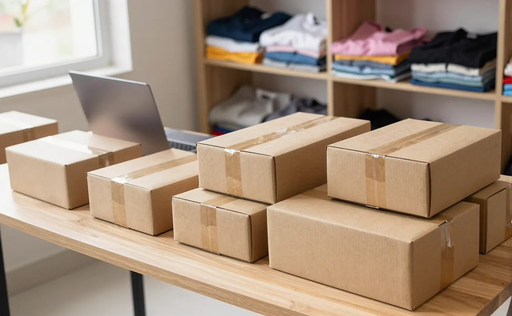
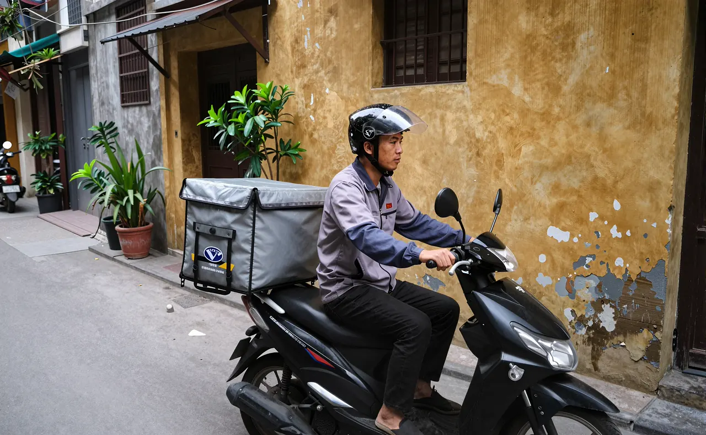

Website
Thiết kế website bán hàng riêng: cần những chức năng gì, so với sàn ra sao và tốn bao nhiêu
Bán trên sàn đã quen, nhưng phí sàn tăng, khách mua xong là mất liên lạc, thương hiệu lẫn giữa hàng nghìn gian hàng khác. Bài này liệt kê đủ chức năng một website bán hàng riêng cần có, từ giỏ hàng, thanh toán, vận chuyển đến quản lý đơn, so sánh thẳng với sàn và nói rõ chi phí theo từng gói.

Thiết kế website bán hàng riêng nghĩa là có một cửa hàng trực tuyến mang tên miền của bạn, nơi khách xem sản phẩm, cho vào giỏ, chọn cách thanh toán và giao hàng mà không phải qua sàn. Chức năng tối thiểu gồm: danh mục và trang chi tiết sản phẩm, giỏ hàng, thanh toán (nhận tiền khi giao, chuyển khoản bằng mã VietQR, ví điện tử hoặc thẻ), tính phí vận chuyển, trang quản lý đơn hàng và tồn kho, cùng các trang chính sách. Chi phí phụ thuộc vào việc bạn cần giỏ hàng đầy đủ hay chỉ cần trang sản phẩm có nút đặt qua Zalo; tại Dream Labs, website bắt đầu từ 8.000.000đ, còn thanh toán online và kết nối CRM nằm ở gói Cao cấp.
Bài này dành cho chủ shop đã bán ổn trên fanpage hoặc sàn và đang cân nhắc có cửa hàng riêng. Nếu bạn còn phân vân có cần website hay không, hãy đọc trước bài đã có fanpage, Shopee thì có cần làm website không.
Khi nào shop nên có website bán hàng riêng
Website bán hàng riêng không phải bước đầu tiên của mọi cửa hàng. Nó đáng làm khi có ít nhất một trong các dấu hiệu sau:
- Khách quay lại mua nhiều lần: mỹ phẩm, thực phẩm sạch, đồ cho mẹ và bé, cà phê, trà. Với nhóm này, giữ được số điện thoại và lịch sử mua của khách là giữ được doanh thu tháng sau.
- Bạn chạy quảng cáo đều đặn: đưa khách về trang của mình thì đo được chuyển đổi, gắn được Pixel, GA4, và không phải chia khách với gian hàng đối thủ hiện ngay bên cạnh.
- Sản phẩm cần kể chuyện: hàng thủ công, đặc sản vùng miền, sản phẩm cao cấp. Trang sản phẩm trên sàn bị giới hạn bố cục, còn website cho bạn toàn quyền về hình ảnh và nội dung.
- Bạn bán sỉ hoặc cho đại lý: cần bảng giá riêng, đơn tối thiểu, công nợ, những thứ sàn bán lẻ không hỗ trợ.
Ngược lại, nếu bạn mới bán thử vài mã hàng, chưa có khách quay lại, thì một landing page kèm nút Zalo thường rẻ và nhanh hơn.
Chức năng bắt buộc của một website bán hàng
Danh mục, bộ lọc và tìm kiếm
Khách phải tìm được sản phẩm trong vài lần chạm. Danh mục nên chia theo cách khách nghĩ (theo nhu cầu, theo loại da, theo dịp tặng quà), không theo cách kho đặt mã. Từ khoảng vài chục sản phẩm trở lên, cần bộ lọc theo giá, kích cỡ, màu và ô tìm kiếm có gợi ý.
Trang chi tiết sản phẩm
Đây là trang quyết định khách có mua hay không. Một trang sản phẩm đủ ý gồm: ảnh thật nhiều góc, có thể kèm video ngắn; giá và giá khuyến mãi; lựa chọn biến thể (size, màu, dung tích) đổi được ảnh tương ứng; tình trạng còn hàng; mô tả ngắn ở trên, thông tin chi tiết bên dưới; chính sách giao hàng và đổi trả tóm tắt ngay cạnh nút mua; đánh giá của khách đã mua. Nút "Thêm vào giỏ" và nút nhắn Zalo hỏi thêm nên luôn nằm trong tầm ngón cái khi cuộn trên điện thoại.
Giỏ hàng và trang đặt hàng
Giỏ hàng cần cho khách sửa số lượng, xóa món, nhập mã giảm giá và thấy ngay tổng tiền kèm phí ship dự kiến. Trang đặt hàng càng ngắn càng tốt: họ tên, số điện thoại, địa chỉ, cách giao, cách thanh toán, ghi chú. Hãy cho phép mua mà không cần tạo tài khoản; bắt khách đăng ký trước khi mua thường khiến người mua lần đầu bỏ giỏ hàng. Tài khoản chỉ nên là lựa chọn thêm để xem lại đơn cũ và tích điểm.
Thanh toán: COD, VietQR, ví điện tử và thẻ
Khách Việt vẫn quen nhận hàng rồi trả tiền (COD), nhưng nhiều khách, nhất là khách quen, sẵn sàng chuyển khoản trước nếu việc thanh toán đủ nhanh và rõ ràng. Một website bán hàng nên có ít nhất hai lựa chọn:
- COD: dễ nhất cho khách, nhưng shop chịu rủi ro khách không nhận hàng và chờ đơn vị vận chuyển đối soát tiền. Có thể giới hạn COD cho đơn dưới một mức giá nhất định.
- Chuyển khoản bằng mã VietQR: VietQR là chuẩn mã QR chuyển khoản liên ngân hàng do NAPAS triển khai, khách quét bằng ứng dụng ngân hàng nào cũng được. Website tạo mã QR riêng cho từng đơn, điền sẵn số tiền và nội dung là mã đơn, nên khách không gõ nhầm. Nếu kết nối thêm dịch vụ nhận thông báo biến động số dư, đơn có thể tự chuyển sang trạng thái đã thanh toán.
- Ví điện tử và cổng thanh toán: các ví như MoMo, ZaloPay hay cổng như VNPAY cho phép khách trả bằng ví, thẻ nội địa, thẻ quốc tế. Để dùng, doanh nghiệp phải ký hợp đồng và qua bước xét duyệt hồ sơ của bên cung cấp, phí giao dịch tính theo hợp đồng từng bên. Thời gian xét duyệt không phụ thuộc bên làm web, nên hãy nộp hồ sơ sớm.
Với shop nhỏ, COD cộng VietQR động thường đủ cho giai đoạn đầu. Cổng thanh toán thẻ đáng thêm khi bạn có khách nước ngoài, khách doanh nghiệp hoặc đơn giá trị cao muốn trả góp.
Vận chuyển và phí ship
Phí ship là chỗ khách hay bỏ đơn nhất nếu chỉ hiện ở bước cuối. Có hai cách làm:
- Bảng phí cố định: chia theo nội thành, ngoại thành, tỉnh khác, cộng ngưỡng miễn phí ship. Đơn giản, dễ hiểu, hợp khi hàng có kích thước tương đối giống nhau.
- Kết nối đơn vị vận chuyển: nhiều hãng giao hàng trong nước như GHN, GHTK, Viettel Post có giao diện kết nối (API) để tính phí theo địa chỉ và khối lượng, tạo vận đơn và cập nhật trạng thái giao. Hợp khi bạn có nhiều đơn mỗi ngày và không muốn nhập tay mã vận đơn.
Dù chọn cách nào, trang sản phẩm nên ghi rõ thời gian giao dự kiến theo khu vực và trang đơn hàng của khách nên có mã vận đơn để tự tra cứu, đỡ một lượng lớn tin nhắn "đơn của mình tới đâu rồi".
Quản lý đơn hàng, tồn kho và khách hàng
Phần khách không nhìn thấy mới là phần bạn dùng hằng ngày. Trang quản trị của website bán hàng cần tối thiểu:
- Danh sách đơn theo trạng thái: mới, đã xác nhận, đang đóng gói, đang giao, đã giao, hoàn, hủy. Mỗi lần đổi trạng thái có thể gửi tin báo cho khách.
- Tồn kho theo biến thể: hết size nào thì size đó tự ẩn nút mua hoặc hiện "hết hàng", tránh bán quá số đang có.
- Hồ sơ khách: lịch sử mua, tổng chi tiêu, ghi chú. Đây là dữ liệu sàn không đưa cho bạn đầy đủ, và là nền cho chăm sóc khách sau mua.
- Mã giảm giá và chương trình: theo phần trăm, theo số tiền, theo đơn tối thiểu, có ngày hết hạn.
Nếu bạn vừa bán trên website vừa bán trên sàn, khó nhất là đồng bộ tồn kho giữa các kênh. Bài quản lý kho và đơn hàng tự động cho shop bán đa kênh nói kỹ cách gom đơn và trừ kho về một chỗ.
Website bán hàng riêng so với bán trên sàn
Hai kênh không thay thế nhau. Sàn giỏi đón khách mới đang tìm sản phẩm, website giỏi giữ khách và xây thương hiệu. Bảng dưới giúp bạn thấy khác biệt chính:
| Tiêu chí | Website riêng | Gian hàng trên sàn |
|---|---|---|
| Nguồn khách | Tự kéo về: quảng cáo, Google, mạng xã hội, khách cũ | Có sẵn lượng người tìm kiếm trên sàn |
| Chi phí theo đơn | Không có phí sàn, chỉ phí thanh toán và vận chuyển | Phí cố định, phí thanh toán, phí dịch vụ theo chính sách từng sàn |
| Dữ liệu khách | Bạn giữ đầy đủ số điện thoại, lịch sử mua | Hạn chế theo quy định của sàn |
| Giao diện, nội dung | Toàn quyền thiết kế, kể chuyện thương hiệu | Theo khuôn của sàn |
| Đối thủ trên cùng trang | Không có | Hiện ngay bên cạnh, so giá trực tiếp |
| Chi phí ban đầu | Thiết kế, tên miền, hosting | Gần như không có |
| Phụ thuộc chính sách | Ít, bạn tự đặt luật | Nhiều, sàn đổi phí hay thuật toán là ảnh hưởng ngay |
Cách nhiều shop làm là giữ sàn để có khách mới, rồi dùng phiếu cảm ơn trong hộp hàng, ưu đãi cho lần mua sau trên website, hoặc kết bạn Zalo OA để kéo khách quen về kênh riêng. Hãy đọc kỹ quy định của sàn trước khi làm, vì một số sàn hạn chế việc dẫn khách ra ngoài.
Thủ tục và trang chính sách cần có
Website có chức năng đặt hàng trực tuyến thuộc phạm vi quản lý thương mại điện tử. Từ 01/7/2026, khung pháp lý chính là Luật Thương mại điện tử 2025 (Luật số 122/2025/QH15) cùng Nghị định 248/2026/NĐ-CP quy định chi tiết; việc thông báo hoặc đăng ký website thực hiện trên Cổng online.gov.vn. Thủ tục cụ thể tùy chức năng website, nên kiểm tra trên cổng này hoặc hỏi Sở Công Thương trước khi bán. Mục pháp lý của bài có fanpage, Shopee có cần website tóm tắt thêm cách kiểm tra.
Ngoài thủ tục, website bán hàng nên có sẵn các trang: chính sách giao hàng, chính sách đổi trả và hoàn tiền, phương thức thanh toán, chính sách bảo mật thông tin, điều khoản sử dụng, thông tin doanh nghiệp (tên, mã số, địa chỉ, số điện thoại). Website có form thu họ tên, số điện thoại, địa chỉ của khách đang xử lý dữ liệu cá nhân, nên cần nói rõ mục đích sử dụng theo Luật Bảo vệ dữ liệu cá nhân số 91/2025/QH15.
Dùng nền tảng có sẵn hay thiết kế riêng
Có ba hướng phổ biến, mỗi hướng hợp một kiểu cửa hàng:
- Nền tảng bán hàng thuê bao: các nền tảng như Haravan, Sapo, Shopify cho sẵn giỏ hàng, thanh toán, quản lý đơn, trả phí hằng tháng. Lên nhanh, ít lo kỹ thuật, nhưng giao diện theo khuôn và bạn phụ thuộc vào nền tảng.
- WordPress kèm WooCommerce: linh hoạt, nhiều plugin, nhưng cần người bảo trì, cập nhật và giữ tốc độ, bảo mật.
- Thiết kế và lập trình riêng: giao diện, trải nghiệm và luồng đặt hàng theo đúng cách bạn bán, tải nhanh, không bị khuôn. Chi phí ban đầu cao hơn, hợp với thương hiệu muốn khác biệt hoặc có quy trình riêng như bán sỉ, đặt trước, cá nhân hóa sản phẩm.
Bài làm website bằng WordPress hay code tay so sánh chi tiết hơn về chi phí lâu dài và độ phụ thuộc.

Ví dụ minh họa: hai shop, hai mức website
Ví dụ minh họa, không phải khách hàng thật. Một shop trà đặc sản ở Thái Nguyên có khoảng 20 mã hàng, khách chủ yếu là khách quen đặt lại mỗi tháng. Shop này không cần giỏ hàng phức tạp: trang sản phẩm đẹp, nút đặt hàng mở Zalo kèm sẵn tên sản phẩm, form đặt hàng nhanh và mã VietQR là đủ. Phần đầu tư nên dồn vào ảnh, câu chuyện vùng trồng và bài viết để lên Google.
Một thương hiệu thời trang có vài trăm mã, mỗi mã nhiều size và màu, chạy quảng cáo hằng ngày. Shop này cần giỏ hàng đầy đủ, bộ lọc, tồn kho theo biến thể, kết nối đơn vị vận chuyển và cổng thanh toán, cùng đồng bộ tồn kho với sàn. Đây là phạm vi của một dự án thương mại điện tử thật sự, thời gian và chi phí lớn hơn nhiều.
Sai lầm thường gặp khi làm website bán hàng
- Làm đủ tính năng nhưng không có người vận hành: giá cũ, hết hàng vẫn hiện còn, đơn không ai xác nhận. Website bán hàng là một cửa hàng cần người trông.
- Ảnh sản phẩm tải từ nhà cung cấp: giống hệt hàng nghìn shop khác, khách không có lý do mua ở bạn.
- Phí ship chỉ hiện ở bước cuối: khách thấy tổng tiền tăng bất ngờ và rời đi.
- Bắt đăng ký tài khoản trước khi mua: thêm một bước không cần thiết với người mua lần đầu.
- Quên điện thoại: nhiều khách đến từ quảng cáo mạng xã hội và mở trang trong ứng dụng, giỏ hàng phải dùng tốt bằng một tay.
Chi phí thiết kế website bán hàng tại Dream Labs
Website tại Dream Labs chia ba gói. Gói Cơ bản 8.000.000đ gồm 5 trang theo mẫu tinh chỉnh, form liên hệ và nút Zalo, hợp với shop ít mã hàng, nhận đơn qua Zalo hoặc form. Gói Chuyên nghiệp 18.000.000đ thiết kế riêng đến 10 trang, có trang quản trị (CMS) để tự sửa nội dung và đăng bài blog. Gói Cao cấp Liên hệ có tích hợp thanh toán online, CRM, đa ngôn ngữ và trợ lý AI tiếp khách trên website. Giỏ hàng, quản lý đơn, kho và kết nối đơn vị vận chuyển được báo giá theo phạm vi sau khi biết số mã hàng và cách bạn vận hành.
| Gói | Giá | Thời gian | Bao gồm |
|---|---|---|---|
| Cơ bản | 8.000.000đ | 7–10 ngày4 vòng sửa | Có mặt chuyên nghiệp trên Google và điện thoại trong khoảng 10 ngày, khách tìm thấy và liên hệ được ngay.
|
| Chuyên nghiệpPhổ biến nhất | 18.000.000đ | 14–21 ngày9 vòng sửa | Website riêng đúng tầm thương hiệu, tự đăng bài để có khách từ Google lâu dài, không phụ thuộc người làm.
|
| Cao cấp | Liên hệ | 30–45 ngàyKhông giới hạn trong phạm vi | Trải nghiệm đủ khác biệt để định vị cao cấp, bán hàng và tiếp khách trực tuyến, phục vụ cả khách nước ngoài.
|
Xem thêm trang thiết kế website bán hàng, so sánh các dịch vụ ở bảng giá, và dự trù chi phí duy trì website hằng năm trước khi quyết định. Gửi link shop hiện tại qua Zalo 0934 246 420 để được gợi ý phạm vi vừa đủ.
Câu hỏi thường gặp
Website bán hàng khác website giới thiệu doanh nghiệp ở đâu?
Website giới thiệu chủ yếu để khách hiểu và liên hệ. Website bán hàng có thêm giỏ hàng, thanh toán, vận chuyển, quản lý đơn và tồn kho, tức là khách hoàn tất việc mua ngay trên trang.
Shop nhỏ có cần giỏ hàng không?
Không nhất thiết. Với vài chục mã hàng và khách quen, trang sản phẩm có nút đặt qua Zalo kèm mã VietQR thường đủ và rẻ hơn. Giỏ hàng đầy đủ đáng làm khi đơn nhiều, mã hàng nhiều biến thể hoặc chạy quảng cáo lớn.
Website có tự xác nhận khách đã chuyển khoản không?
Có thể, nếu kết nối dịch vụ nhận thông báo giao dịch của tài khoản ngân hàng và dùng mã VietQR có nội dung là mã đơn. Khi tiền về đúng số và đúng nội dung, đơn tự chuyển sang đã thanh toán.
Làm website bán hàng có phải đăng ký với Bộ Công Thương không?
Website có chức năng đặt hàng trực tuyến phải làm thủ tục theo Luật Thương mại điện tử 2025 và Nghị định 248/2026/NĐ-CP, thông báo hoặc đăng ký trên Cổng online.gov.vn. Hãy kiểm tra thủ tục đúng với chức năng website của bạn, hoặc hỏi Sở Công Thương, trước khi ra mắt.
Có nên bỏ sàn khi đã có website riêng?
Không nên bỏ ngay. Sàn vẫn là nơi đón khách mới đang tìm sản phẩm, website giữ khách quen và xây thương hiệu. Hai kênh bổ trợ cho nhau nếu đồng bộ được tồn kho.
Website bán hàng có kết nối được với đơn vị giao hàng không?
Được. Nhiều hãng vận chuyển trong nước có giao diện kết nối để tính phí theo địa chỉ, tạo vận đơn và cập nhật trạng thái giao. Phần này được báo giá theo số hãng và mức tự động bạn cần.
Chi phí làm website bán hàng tại Dream Labs bao nhiêu?
Từ 8.000.000đ cho website 5 trang nhận đơn qua Zalo và form, 18.000.000đ cho website thiết kế riêng có trang quản trị, và Liên hệ cho website có thanh toán online, CRM. Giỏ hàng, kho và vận chuyển báo giá theo phạm vi.
Nguồn ảnh: ảnh minh họa do Dream Labs tạo bằng AI (ComfyUI · Z-Image Turbo), không phải ảnh chụp khách hàng hay dự án thật.
Bắt đầu cùng Dream Labs
Muốn biết shop của bạn cần website bán hàng tới mức nào?
Nhắn Zalo cho Dream Labs số mã hàng, kênh đang bán và cách bạn đang chốt đơn. Chúng tôi đề xuất chức năng vừa đủ và báo giá theo gói rõ ràng.